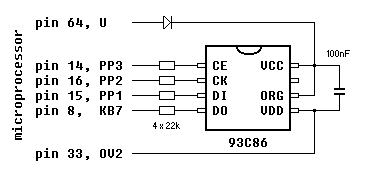

| Index | wersja polska |
In my opinion, the biggest disadvantage of the MK-85 against the design prototype Casio FX-700P is the lack of an external storage support. The ability of machine code programming makes possible to solve this problem. The proposed project allows to save BASIC programs to a nonvolatile serial memory.
As a mass storage device serves a popular serial EEPROM 93C86 with Microwire bus, connected to the keyboard port. The EEPROM should be inserted or removed only when the calculator is turned off.

Data stored in the EEPROM consist of the BASIC programs address table 822C-823F followed by the code segment starting from address 826A.
It is convenient to leave the machine code starter in the program P0 and use only P1-P9 for other BASIC programs.
; port 100, bit 7 - Data Output
; port 102, bit 1 - Data Input
; port 102, bit 2 - Clock
; port 102, bit 3 - Chip Select
.radix 16
start: mov #E,@#102 ;CE=0, CK=0, DO=0
mov #822C,r4 ;starting RAM address
mov #C000,r3 ;READ command and EEPROM address
clr r5 ;no delay after transfer
cmpb @#825A,#4C ;'L', load
beq loop
mov #A000,r3 ;WRITE command and EEPROM address
mov #20,r5 ;delay of ca. 10ms after transfer
cmpb @#825A,#53 ;'S', save
bne end
; Write Enable
mov #9800,r1 ;command EWEN
mov #E,r2 ;13 (decimal) clock cycles
jsr pc,xfer
mov #E,@#102 ;CE=0, CK=0, DO=0
; transfer data
loop: mov r3,r1
add #8,r3 ;increment EEPROM address
mov #E,r2 ;13 (decimal) clock cycles
jsr pc,xfer
mov (r4),r1 ;data to save, ignored when loading
mov #11,r2 ;16 (decimal) clock cycles
jsr pc,xfer
mov #E,@#102 ;CE=0, CK=0, DO=0
mov r5,r0 ;delay after transfer
beq load
jsr pc,@#10FC ;EEPROM write time of ca. 10ms
br next
load: mov r1,(r4) ;loaded data
next: cmpb (r4)+,(r4)+ ;advance the RAM address
cmp r4,#8240
bcs loop
bne next1
mov #826A,r4 ;skip system variables
next1: cmp r4,@#823E
bcs loop
; Write Disable
end: mov #8000,r1 ;command EWDS
mov #E,r2 ;13 (decimal) clock cycles
jsr pc,xfer
mov #E,@#102 ;CE=0, CK=0, DO=0
; system restart
clr r0 ;reset vector
jmp (r0)
xfer1: bic #4,r0 ;CK=1
mov r0,@#102
mov @#100,r0
rolb r0 ;Carry=/DO
; send r1 through DI, and read from DO to r1
; expects number_of_bits+1 in r2
xfer: rol r1 ;Carry=/DI, bit 0 of r1 = /DO
mov #3,r0 ;CE=1, CK=0, DI=0
sbc r0 ;CE=1, CK=0, DI=/Carry
asl r0
mov r0,@#102
sob r2,xfer1
com r1
rts pc
9000 !DF,15,0E,00,02,01,C4,15 9010 !2C,82,C3,15,00,C0,05,0A 9020 !D7,A7,5A,82,4C,00,11,03 9030 !C3,15,00,A0,C5,15,20,00 9040 !D7,A7,5A,82,53,00,28,02 9050 !C1,15,00,98,C2,15,0E,00 9060 !F7,09,68,00,DF,15,0E,00 9070 !02,01,C1,10,C3,65,08,00 9080 !C2,15,0E,00,F7,09,54,00 9090 !01,13,C2,15,11,00,F7,09 9100 !4A,00,DF,15,0E,00,02,01 9110 !40,11,03,03,DF,09,FC,10 9120 !01,01,4C,10,14,A5,17,21 9130 !40,82,E7,87,02,02,C4,15 9140 !6A,82,1F,21,3E,82,E1,87 9150 !C1,15,00,80,C2,15,0E,00 9160 !F7,09,18,00,DF,15,0E,00 9170 !02,01,00,0A,48,00,C0,45 9180 !04,00,1F,10,02,01,C0,17 9190 !00,01,40,8C,41,0C,C0,15 9200 !03,00,80,0B,C0,0C,1F,10 9210 !02,01,8F,7E,41,0A,87,00 9999 END
 mk85util.zip - file size: 21kB, sources and executables, DOS and Windows (in a DOS window)
mk85util.zip - file size: 21kB, sources and executables, DOS and Windows (in a DOS window)
This utility converts a list of BASIC programs in ASCII format to the internal MK-85 data format.
Usage:
bas2mk85.com program1.bas [program2.bas program3.bas ...]
This utility does the opposite to the previous one, i.e. displays the contents of the EEPROM image.
Usage: mk852bas.com infile.bin